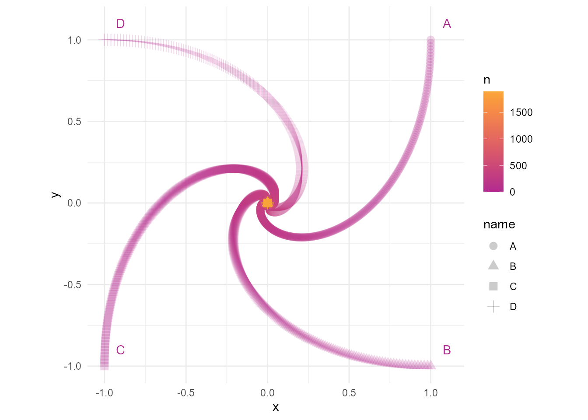

library(tidyverse)游戏的设定是四个人A，B，C，D站在四个角，A追B，B追C，C追D，D追A。高数里面好像经常有类似的题目，今天用代码来模拟一下。
dt_list <- list(
tibble(
name = c("A", "B", "C", "D"),
x = c(1, 1, -1, -1),
y = c(1, -1, -1, 1),
direction = c(2, 3, 4, 1),
n = 0
)
)生成一个tibble，其中
name列表示四个人的名字。x、y是坐标。direction列表示追逐的人的行号，比如A追B，B在第二行，所以A对应的direction是2。n表示跑了几步，目前没有开始追，所以是0步。
# 设置程序最多跑5000步，防止程序出错而不收敛
N <- 5000
# 设置每一步的步长
step_length <- 0.01
# 开始循环
for (i in 1:N) {
dt = dt_list[[i]]
x_diff = max(dt$x) - min(dt$x)
y_diff = max(dt$y) - min(dt$y)
# 因为x,y是浮点数，最终可能每个点的x,y都十分接近但不相等，因此用near()来判断
if (!all(near(c(x_diff, y_diff), 0))) {
dt_list[[i + 1]] <- dt %>%
# 每个人向所追的方向迈一步
mutate(x_d = as_vector(dt[direction, "x"] - x),
y_d = as_vector(dt[direction, "y"] - y),
x = x + x_d * step_length,
y = y + y_d * step_length,
n = i)
} else {
break
}
}整理一下结果
dt <- do.call(bind_rows, dt_list)
dt# A tibble: 7,572 × 7
name x y direction n x_d y_d
<chr> <dbl> <dbl> <dbl> <dbl> <dbl> <dbl>
1 A 1 1 2 0 NA NA
2 B 1 -1 3 0 NA NA
3 C -1 -1 4 0 NA NA
4 D -1 1 1 0 NA NA
5 A 1 0.98 2 1 0 -2
6 B 0.98 -1 3 1 -2 0
7 C -1 -0.98 4 1 0 2
8 D -0.98 1 1 1 2 0
9 A 1.00 0.960 2 2 -0.0200 -1.98
10 B 0.960 -1.00 3 2 -1.98 0.0200
# ℹ 7,562 more rowsdt %>%
slice_max(n)# A tibble: 4 × 7
name x y direction n x_d y_d
<chr> <dbl> <dbl> <dbl> <dbl> <dbl> <dbl>
1 A 7.44e-9 4.30e-9 2 1892 -3.05e-9 -1.19e-8
2 B 4.30e-9 -7.44e-9 3 1892 -1.19e-8 3.05e-9
3 C -7.44e-9 -4.30e-9 4 1892 3.05e-9 1.19e-8
4 D -4.30e-9 7.44e-9 1 1892 1.19e-8 -3.05e-9达到收敛的状态花了1892步，即在步长为0.01时，1892步后四人追到彼此。
看下四个人的轨迹
dt %>%
ggplot(aes(x, y, color = n, pch = name)) +
geom_point(alpha = 0.2, size = 3) +
geom_text(data = dt_list[[1]],
aes(x, y, label = name),
nudge_x = 0.1,
nudge_y = 0.1) +
coord_equal() +
scale_color_viridis_c(option = "C", end = 0.8, begin = 0.4) +
theme_minimal()